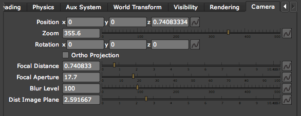
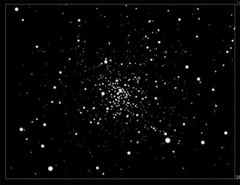
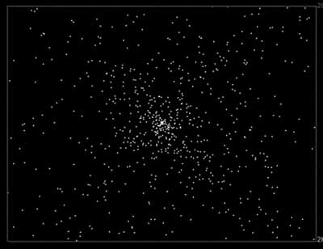

Camera tab
The Camera tab controls the Camera properties for Particular. This tab contains standard camera properties for mimicking a 3D camera, including Depth of Field.

The Camera tab.
Position x, y, z
Sets the position of the camera.
Zoom
Controls the zoom level of the camera. High values makes the zoom bigger and gets rid of the lens distortion, like using a long zoom len that flattens the image. A value of 1,000 is pretty straight on and won't see a lot of lens distortion. Low values simulate a wide angle lens and put the camera close to subject. The lower the zoom, the more lens distortion.
Rotation x, y, z
Sets the direction the camera is pointing.
Ortho Projection checkbox
Simulates an Ortho camera so all particles to appear on the same 2D plane. It basically gets rid of depth perspective and treats all of the particles as the same size. This can be useful for observing where particles are on the XY plane without worrying about distance from the camera.
 
At left, Ortho Projection is off. At right, Ortho Projection is on.
Focal Distance
The distance from the camera that particles are most in focus. All Particles are in focus when they are first emitted because Focal Distance is same distance from the camera as the Emitter. Particles that aren't at the Focal Distance value will be out of focus to varying degrees.
The default value is the same value as Position Z. If you change Focal Distance, then particles get more or less out of focus. The particles that are closer to camera are in focus. Higher values sets a greater amount of distance for which the particles will be in focus.
Focal Aperture
One of three fine tune controls for Depth of Field (DOF). Focal Aperture is an aperture for determining how much is in focus. The larger the value, the larger the virtual aperture, which causes the depth of field to be shallower and less in focus.
Higher values mean particles that aren't at Focal Distance aren't going to be as in focus. A value of 0 is equivalent to turning off DOF in the Rendering tab.
Blur Level
One of three fine tune controls for Rendering> Depth of Field (DOF). Blur Level affects the amount of blur on the out-of-focus particles. It adjusts the blur amount in depth of field independently of camera options.
A value of 0 is equivalent to turning off DOF in rendering. At 100% the blur is what it would be with real camera.
Dist Image Plane
One of three fine tune controls for Rendering> Depth of Field (DOF). Like Blur Level, Dist Image Plane changes how much the particles are out of focus. It sets the distance of the image plane from the focal point of the camera.
A value of 0 is equivalent to turning off DOF in rendering. The larger this value, the shallower the depth of field, and the more particles are out of focus if they are already out of focus.